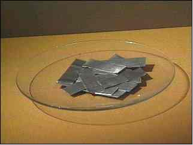
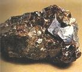
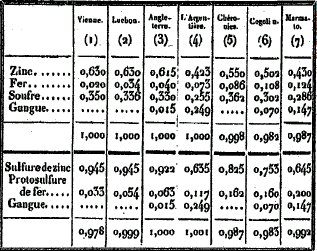
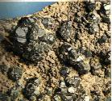
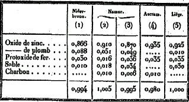
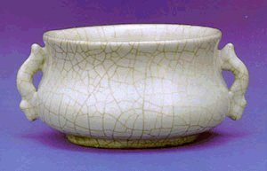
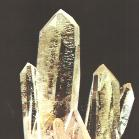
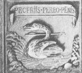
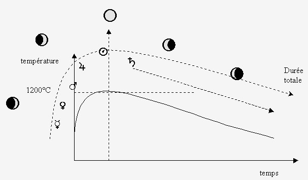

Chapitre 7
De la première opération de la Préparation du Mercure Philosophique1 par les Aigles volantes2
I Sache, mon frère, que l'exacte préparation des Aigles des Philosophes est considérée comme le premier degré de la perfection3, lequel ne se laisse connaître que par un esprit habile. Ne crois pas en effet que cette science soit parvenue à aucun de nous par hasard4, ou par une imagination fortuite, comme le pense sottement la masse des ignorants : la recherche de la vérité nous a coûté un long et lourd labeur, de nombreuses nuits sans sommeil, beaucoup de peines et de sueurs. C'est pourquoi toi, studieux apprenti, sois fortement persuadé que sans effort ni travail tu n'arriveras à rien dans la première opération. Quant à la seconde5, c'est la nature seule qui fait l'ouvrage, sans qu'il soit besoin d'y mettre la main, si ce n'est pour appliquer, au-dehors, un feu modéré.
II Comprends donc, frère, ce que veulent dire les Sages quand ils écrivent qu'ils soivent mener leurs aigles dévorer le lion ; moins il y a d'aigles, plus la bataille est rude et plus tardive la victoire; mais l'opération est parfaitement exécutée avec un nombre de sept ou neuf aigles6. Le Mercure philosophique est l'oiseau d'Hermès, qu'on appelle tantôt "oison", tantôt "faisan"7, tantôt celui-ci, tantôt celui-là.
III Lorsque les mages parlent de leurs Aigles, ils en parlent au pluriel, et ils en comptent entre trois et dix. Ils ne veulent néanmoins pas dire par là qu'il faille joindre à un poids donné de terre autant de mesures d'eau qu'ils mettent d'aigles, mais il faut comprendre qu'ils parlent du poids interne ou de la force du feu, c'est-à-dire sans doute qu'on doit prendre de l'eau autant de fois aiguisée qu'ils comptent d'aigles8 ; cette acuation se fait par sublimation. Ainsi, chaque sublimation du Mercure philosophique correspond à une aigle, et la septième sublimation exaltera ton Mercure au point qu'il formera un bain très convenable pour ton Roi.
IV Pour bien dénouer la difficulté, lis attentivement ce qui suit : prends quatre parties de notre Dragon igné, qui cache dans son ventre l'Acier magique, et neuf parties de notre Aimant; mêle-les ensemble avec l'aide du torride Vulcain, de façon qu'ils forment une eau minérale où surnagera une écume9 qu'il faut rejeter. Laisse la coquille et prends le noyau, purge-le à trois reprises par le feu et le sel10, ce qui se fera aisément si Saturne a regardé sa propre beauté dans le Miroir de Mars11.
V De là naîtra le Caméléon, c'est-à-dire notre Chaos12, où sont cachés tous les secrets, non pas en acte, mais en puissance. C'est là cet enfant Hermaphrodite, empoisonné dès le berceau par la morsure du Chien enragé de Corascène13, à cause de quoi une hydrophobie permanente, ou peur de l'eau, le rend fou et insensé14; et alors que l'eau est l'élément naturel le plus proche de lui, il l'abhorre et la fuit. O Destins!
VI Toutefois il se trouve, dans la forêt de Diane, deux colombes15 qui adoucissent sa rage insensée (si on les applique avec l'art de la Nymphe Vénus16). Alors pour empêcher que cette hydrophobie ne le reprenne, plonge-le dans les eaux, et qu'il y périsse. A ce moment le Chien Noirâtre Enragé, suffoqué, incapable de supporter les eaux, montera presque jusqu'à leur surface : chasse-le à force de pluie et de coups, et fais le fuir bien loin : ainsi disparaîtront les ténèbres.
VII Quand la Lune brillera en son plein17, donne des ailes à l'Aigle, qui s'envolera, laissant mortes derrière elle les colombes de Diane18 qui, si elles ne sont pas mortes à la première rencontre, ne peuvent servir à rien. Réitère sept fois19 cette opération, et enfin tu trouveras le repos, n'ayant simplement qu'à faire cuire ; c'est la plus parfaite tranquillité, un jeu d'enfant20 et un ouvrage de femmes.
1. Le Mercure philosophique est le dissolvant universel permettant aux constituants du Rebis de se liquéfier. Ces constituants y subissent une dissolution radicale qui correspond à la putréfaction -c'est là l'Oeuvre au Noir- avant la réincrudation correspondant à la naissance du Regulus. C'est la IIe phase du Grand Oeuvre. La première opération doit donc consister à préparer les composants formant le Mercure philosophique qui doit se comporter comme un fondant.
2. Autre énigme désespérante que n'a pas manqué de signaler Fulcanelli : les aigles volantes.ØJe précise immédiatement que mon analyse a beaucoup évolué depuis la première rédaction de ce commentaire [vers décembre 1999] ; les Aigles volantes se rapportent à la formation du carbonate e potasse par projection de cuillerées de charbon dans du nitre [cf. section sur l'Alkaest de Glauber].Voyons d'abord ce que les Adeptes modernes ont à nous apprendre sur ces aigles. La première allusion à l'aigle se trouve dans les Mystères, p.115, à l'évocation du griffon. Le griffon est l'incarnation, si l'on peut dire, des Harpyes : la légende leur donna l'apparence de monstres épouvantables. Leur corps de vautour, leur bec et leurs ongles crochus, l'odeur infecte qui les accompagnent sont autant de représentations de monstres impossibles à rassasier."Le monstre mythologique dont la tête et la poitrine sont celles de l'aigle, et qui emprunte au lion le reste du corps, initie l'investigateur aux qualités contraires qu'il faut nécessairement assembler dans la matière philosophale."
Fulcanelli nomme sublimations philosophiques la réitération des aigles. C'est par là, nous assure t-il, que le mercure exalté se dépouille de ses parties grossières et terrestres. Dans les DM, I, p.270, il dit encore que le griffon est le résultat de l'opération du duel des produits minéraux qui présenteraient -c'est en tout cas ce qu'il assure- les caractères d'incompatibilité, d'aversion naturelle des substances mises en contact. Peut-être est-il plus précis quand, aux DM, I, p.432, il nous parle du lion terrestre et volant, ou griffon, hiéroglyphe mercuriel qui symbolise l'opération essentielle par laquelle le mercure se trouve fixé et se voit aussi muté partiellement en soufre fixe.
ØCela peut valoir pour des substances dont le contact suscite une violente chaleur ou une déflagration ; tel est le cas pour chaux + eau et pour charbon + salpêtre.Le griffon doit symboliser le mélange des deux composants du dissolvant universel, dont l'un est vraisemblablement de la litharge. L'autre composé est plus difficile à choisir, mais, en toute hypothèse, seulement trois candidats peuvent se présenter : un composé d'étain, de zinc ou de bore. L'étain était connu des anciens de même, on l'a vu, que le zinc même s'il n'avait pas été expressément reconnu comme un métal particulier. Le bore, les Romains le connaissaient peut-être sous le nom de chrysocolle (chrysocolla = borax, servant à souder). En fait, il existe un alliage de zinc et de cuivre auquel on donne aussi le nom de chrysocolle et il paraît plus vraisemblable d'envisager cette hypothèse.ØJe pense à présent que l'emploi des oxydes métalliques comme fondant est moins probable que celle des sels minéraux [mélange de carbonates de potasse et de soude ; sulfate de potasse] ; les oxydes métalliques employés comme fondant se rapprochent plus de la spagyrie.Les alliages de cuivre et de zinc sont d'un plus grand usage que ceux de cuivre et d'étain. On leur donne les noms de laiton, cuivre jaune, or du Mannheim, tomback, pinsbeck, métal du Prince-Robert et...chrysocolle. Employé dans certaines proportions, le zinc donne une belle couleur jaune d'or à l'alliage avec le cuivre. Son point de fusion est de 360°. Lorsqu'on le chauffe plus fortement, il se volatilise. On peut le distiller à la chaleur blanche. On peut obtenir du zinc cristallisé en prismes quadrangulaires ou à six pans, selon qu'on le laisse refroidir lentement après l'avoir fondu ou qu'on

FIGURE Icondense ses vapeurs. Lorsque le zinc est en fusion, il se recouvre d'une pellicule grise qui se renouvelle toutes les fois qu'on remue le bain. Quand il est très chaud, il s'embrase comme de l'huile. Ses vapeurs brûlent dans l'air avec une flamme blanche éclatante et l'oxyde qui en résulte se dépose sous la forme de houppes cotonneuses légères d'un très beau blanc ; les alchimistes désignaient cet oxyde sous les noms de laine philosophique, fleur de zinc ou nihil album ; ils l'appelaient aussi pompholix (arsenic blanc). Le zinc décompose l'eau et si l'on projette de l'eau sur le zinc en fusion, l'action décomposante (dégagement d'hydrogène) est si active qu'il y a explosion. Le zinc réduit un grand nombre d'oxydes métalliques ; il réduit notamment la litharge. Pour que la scorie soit bien fusible à 500°C, il faut employer au moins dix fois autant de litharge que de zinc.
L'oxyde de zinc est parfaitement blanc : celui qui résulte de la combustion du métal en vapeurs est en houppes cotonneuses très légères ; celui qui résulte de la calcination du carbonate ou du nitrate est pulvérulent et assez lourd. On le trouve souvent à l'état cristallin dans les fentes des tuyaux de terre qui servent à la préparation du zinc ou dans les cavités de chemise des hauts-fourneaux où l'on traite des minerais de fer zincifères. Cet oxyde est infusible et fixe. Le charbon le réduit à l'aide de la chaleur ainsi que le fer et probablement plusieurs autres métaux, et ce, à une température suffisante pour volatiliser le zinc. L'oxyde calciné peut former des combinaisons avec les terres alcalines et il a une grande affinité pour l'alumine. Il peut se fondre avec la litharge pourvu que cette substance soit employée en proportion suffisante mais la combinaison ne devient bien liquide à 500°C que lorsqu'elle ne contient qu'un cinquième d'oxyde de zinc. L'oxyde de zinc hydraté est humide et gélatineux ; desséché, il est très léger, blanc et ressemble à de la farine. Le pompholix recueilli dans les ateliers est très pur mais il a le défaut d'être excessivement léger. Pour lui donner de la densité, il faut le dissoudre dans l'acide nitrique, dessécher le sel à une température graduée et le calciner ensuite à une chaleur blanche. Les dissolutions d'oxyde de zinc dans l'ammoniaque mêlées avec une dissolution d'alumine dans la potasse donnent un précipité d'aluminate de zinc soluble dans les alcalis ainsi que dans l'ammoniaque. On peut obtenir de l'oxyde de zinc à partir du sulfate ou vitriol blanc. Le sulfate de zinc est souvent préparé en grand en grillant de la blende. A la chaleur rouge, l'hydrogène le décompose en sorte qu'un peu plus de

FIGURE II
(blende miel et galène, Isère, France)50% du sulfate se change en sulfure et le reste en oxyde. Il se dégage alors de l'eau et de l'acide sulfureux d'une part et du zinc métallique qui se sublime d'autre part. Par ailleurs, le charbon réduit le sulfate en sulfure de zinc. Le chlorure de zinc est très fusible, volatil et peut être distillé à la chaleur rouge. Ses vapeurs se condensent en aiguilles cristallines. Le carbonate de zinc préparé en précipitant une dissolution de zinc par une carbonate alcalin est gélatineux quand il se forme puis, desséché, blanc et léger comme de la farine. L'ébullition de cette dissolution laisse précipiter la totalité de l'oxyde de zinc à l'état gélatineux.
Sur les alliages du zinc : ils doivent être préparés à une température basse et se décomposent en partie lorsqu'on les expose à une chaleur élevée. Chose notable, le zinc en se volatilisant entraîne avec lui une petite quantité du métal avec lequel il était uni, souvent même lorsque ce métal est absolument fixe à l'état isolé. Avec le plomb, le zinc s'allie avec une grande facilité, mais les deux métaux n'ont cependant que peu d'affinité l'un pour l'autre car la chaleur blanche les séparent complètement. Dans cette séparation, le zinc entraîne une quantité considérable de plomb en vapeur.
On connaît une variété d'aluminate de zinc découverte en 1805 à Fahlun en Suède. Au chalumeau, il est infusible ; il ne se dissout que très difficilement dans le borax. Il se fond en verre transparent coloré par l'oxyde de fer avec un mélange de borax de soude. Berzélius suppose que c'est un mélange d'aluminate ZnAl6 composé de 0.28 d'oxyde de zinc et de 0.7 d'alumine. La blende est un minéral assez commun et elle accompagne, on l'a vu ailleurs, les autres sulfures métalliques. Elle est d'un brun-rouge ou verdâtre et même noire. Le tableau suivant donne les proportions de fer des blendes, en sachant que la variété noirâtre contient le plus de fer.

FIGURE IIILe carbonate de zinc anhydre est le minerai de zinc le plus commun. Le gîte le plus abondant se trouve à la Vieille-Montagne, entre Liège et Aix-la-Chapelle.
Le zinc du commerce n'est jamais parfaitement pur et entraîne avec lui les substances avec lesquelles il est mêlé lorsqu'on le distille ; il n'y a donc pas de moyen simple pour le purifier. L'une des variétés du zinc provenant de Liège contient jusqu'à 0.004 de fer et 0.004 de plomb ; on a remarqué que le zinc de cette qualité jouit d'une propriété particulière : il s'épaissit à une certaine température et devient parfaitement liquide à une température un peu plus basse.

FIGURE IV
(blende noire, Toscane, Italie)Dans un premier temps, il est nécessaire de griller la blende pour en expulser le soufre. On la transforme en oxyde. Un moyen original a été essayé, qui a consisté à griller la blende en morceaux en la chauffant dans des fours prismatiques. Après le grillage, les morceaux sont transformés en oxyde sur une certaine épaisseur ; le résidu de blende non altérée doit être soumis à une nouvelle opération. Une autre possibilité de production de zinc est fournie par les sublimés des fourneaux et s'appelle la cadmie : ces dépôts sont plus riches que les meilleurs minerais mais contiennent beaucoup de plomb. Le tableau suivant donne les proportions des résidus métalliques observés dans différentes provenances de cadmie :

FIGURE VOn y trouve surtout du protoxyde de fer. La matière est alors verte ; on peut produire ces matières vertes en chauffant en vase clos de l'oxyde de zinc pulvérulent avec de la limaille de fer très fine ; le fer est oxydé par l'oxyde de zinc et le zinc mis à nu se volatilise.
Voyons à présent de quelle manière le zinc peut être distillé : cela dépend de sa provenance. Imaginons que nous ayons de la cadmie. Le zinc est alors oxydé et non combiné avec la silice. Pour réduire l'oxyde de zinc, il suffit de le chauffer à une chaleur blanche après l'avoir mélangé à du charbon. Au moment où la réduction a lieu, le zinc est à l'état de vapeurs ; ces vapeurs se condensent facilement en sorte qu'il suffit d'opérer la réduction dans une cornue de forme ordinaire. Cependant, on ne peut recueillir tout le zinc sublimé : en effet, d'une part le dépôt s'étend sur une grande surface et adhère souvent très fortement aux parois de la cornue ; d'autre part, la cornue doit être tenue ouverte pour que l'air y est accès et ramène à l'état d'oxyde les vapeurs qui arrivent jusque auprès de l'orifice du col. Enfin, la proportion de zinc qui s'oxyde est d'autant plus grande que l'on opère sur de plus petites masses et elle est toujours très importante dans des essais qui se font sur 10 à 30 g de matière. La distillation du zinc est donc une opération plus compliquée qu'il n'y paraît et elle exige une température trop élevée pour qu'on puisse l'exécuter dans une cornue de verre même lutée. Il faut se servir de cornues de terre bien cuites et imperméables aux gaz. La cornue, une fois remplie de la matière, doit être mise sur un fromage [rondelle réfractaire sur laquelle on pose les creusets dans les fours à creuset, on dit aussi tourte] dans un fourneau à réverbère. On y adapte son laboratoire [partie du four à réverbère où s'effectuent les échanges de chaleur ou les réactions chimiques] et son dôme ; par dessus, on dispose un tuyau d'environ 1 m de longueur. Le col de la cornue doit saillir d'environ 1 dm hors du fourneau et son orifice ne doit pas être trop étroit. Enfin, on fixe au col, à l'aide du bouchon, une allonge droite en verre qui est destinée à recevoir les vapeurs de zinc qui pourraient s'échapper de la cornue et à rendre l'accès de l'air dans celle-ci plus difficile. On chauffe progressivement jusqu'à ce que la cornue devienne blanche dans son intérieur ; le zinc se réduit, se volatilise et se condense dans le col, d'autant plus près de l'orifice que la chaleur est plus forte. Il faut alors s'assurer impérativement que le col ne soit pas obstrué ; si tel était le cas, il faut alors introduire une verge de fer par l'ouverture de l'allonge sans quoi, il pourrait y avoir explosion. Quand l'opération est terminée, on laisse refroidir, on enlève la cornue, on la couche sur le côté et on la casse avec précaution afin que les particules de zinc qui auraient pu se condenser dans le dôme ne se mêlent pas avec le résidu que contient la panse. On recueille tout le dépôt qui se trouve dans le col et on le fond dans un petit creuset à une chaleur modérée, avec une certaine quantité de flux noir.Voila donc un procédé d'obtention de zinc ou d'oxyde de zinc compatible avec les données de la science au XIXe siècle ; il est possible que des alchimistes aient retrouvé ces procédés à force de réaliser des expérimentations avec des minerais de galène ou de blende, contenant donc à la fois du plomb et du zinc. Comme on l'a vu dans notre page consacrée aux points de recoupement entre la chimie et l'alchimie, une variété de cristal est compatible avec l'usage du zinc, en tant que matériau constitutif : la gahnite. En dehors de cela, le zinc ou plutôt l'oxyde de zinc peut participer à la constitution du fondant nécessaire à la solubilisation du métal et du minéral indispensables à la cristallisation. Nous allons parler à présent de certaines glaçures que l'on obtient en poterie ; n'oublions pas que Fulcanelli a dit que les apprentis alchimistes feraient bien de s'inspirer de l'art du potier. Pourquoi ? les potiers utilisent :
- de l'alumine
- des oxydes colorants
- un ou plusieurs fondants
- un four à ± haute températureet certaines glaçures peuvent comporter des cristaux. Il m'a donc paru intéressant d'étudier tout cela. Un ouvrage de référence est facilement disponible : Terres et glaçures, Daniel Rhodes (Dessain et Tolra, 1984). Une glaçure est un enduit vitrifiable que l'on applique sur certaines poteries pour leur donner de l'éclat. Le point de liaison avec mon hypothèse (la synthèse artificielle de pierres précieuses) tient à la qualité et aux composants du fondant que l'on trouve dans certaines glaçures et qui rapprocheraient alors singulièrement l'alchimie de la poterie ou de la céramique par certaines conditions de cristallisation offertes par de hautes températures. J'ai déjà eu l'occasion d'aborder ce point (1,2,3,4,5) et j'ajoute ici quelques notes complémentaires. Revenons d'abord sur certains défauts présentés par des glaçures : elles nous intéressent car elles sont à l'identique de l'aspect décrit par Fulcanelli de la présentation de la surface du dissolvant.
ØIl se pourrait bien que l'aspect de la surface de ce dissolvant cache en fait un trait de cabale par le truchement des combinaisons possible entre le X romain et le c grec.Que le lecteur se persuade donc que je ne perds nullement mon sujet de vue puisque nous voici de nouveau face à la préparation du Mercure Philosophique de Philalèthe.
J'évoquerai d'abord le tressaillage. Notons d'abord que Fulcanelli peut ici donner des indications sur des techniques utilisées en poterie pour éviter le tressaillage. Celui-ci a lieu quand la glaçure est solidifiée, au moment où le tesson et la glaçure commencent à se contracter ensemble à cause du refroidissement ; quand la glaçure se contracte plus que l'argile, il y a tension et la glaçure est obligée de céder. Ce phénomène peut être combattu en abaissant le coefficient de dilatation de la glaçure. On y parvient en choisissant des oxydes ayant un faible coefficient de dilatation ; on peut soit augmenter la teneur en alumine du mélange, soit remplacer la potasse et la soude par du plomb. Notons aussi que le tressaillage est typique des glaçures riches en substances alcalines (soude ou potasse) et il y a sans doute là une indication sur le type de fondant employé en alchimie. Un certain type de glaçures craquelées est utilisé à des fins décoratives ; de façon générale, si on veut délibérément qu'une glaçure se craquelle, on lui ajoute des alcalis, tels que la potasse ou la soude, sous forme de fritte. Certains grès chinois anciens, tels que les pièces Ko de l'époque Song, ont des fentes de craquelé qui forment de beaux motifs quadrillés.

FIGURE VI
De l'époque Song du Nord 960-1127 (à Cizhou : vallée du fleuve jaune) des pièces à base d'argile rouge vif recouverte d'un pâte blanche fine sur laquelle on a tracé à l'oxyde de fer un décor brun.Ces motifs rappellent ceux qu'évoquent Fulcanelli dans la partie des Mystères consacrée au symbolisme de la galette des rois.
Abordons à présent le cas des glaçures cristallines. Une glaçure est ordinairement après refroidissement une substance amorphe et non cristalline. Dans certaines conditions, la glaçure peut cristalliser ; en principe, l'alumine empêche la cristallisation pendant le refroidissement. Elle a aussi le mérite d'augmenter la viscosité [de filer, évoquant les fileuses dans l'iconographie alchimique] et d'empêcher la glaçure de couler excessivement ; cette information est précieuse car nous comprenons pourquoi il est si important d'agiter le compost au début de la Grande Coction (1). Une grande quantité d'oxyde de zinc dans les glaçures facilite la formation des cristaux (dans une proportion de 0.3) ; le rutile et le titane favorisent aussi la cristallisation [je n'ai eu connaissance de ce point particulier qu'a posteriori et nullement au moment où j'ai compris l'intérêt du zinc en tant que partie constituante du double Mercure].ØDepuis, je pense que le zinc a moins de chance d'intervenir dans la constitution du fondant philosophique [ il faudrait plutôt y voir une allusion, par cabale, au plumbum album des Romains, i.e. à l'album astrum décrit par Dioscoride].La glaçure de base peut contenir du plomb comme fondant ou des alcalis ou du bore et l'on emploie d'habitude des glaçures alcalines. L'absence d'alumine rend ces glaçures fluides et brillantes en surface, ce qui est l'inverse de ce que nous recherchons puisque l'alumine, pour élaborer certaines pierres précieuses, est nécessaire (les corindons colorés). La présence d'oxydes colorants tels que celui du fer ou du cuivre peut colorer la glaçure et teinter les cristaux de façon...intéressante. Il parait que la conduite de la cuisson est capitale pour l'obtention de cristaux : voila un autre point important et cette grande coction semble donc bien éloignée du ludus puerorum des Anciens et de Fulcanelli. La montée en température peut être faite à vitesse normale mais le refroidissement doit être ralenti au moment où les matériaux ont tendance à se cristalliser : cette température ne peut être déterminée qu'expérimentalement et le seuil se situe en général au-dessous de la température de fusion (1,2). On peut ainsi élaborer la synthèse

FIGURE VII
(Brésil)de l'aventurine qui est une variété de quartz rougeâtre contenant des particules de mica miroitant sous la lumière ; ici, c'est donc un verre tenant en suspension des paillettes de cuivre. Nous sommes bien sûr assez loin des corindons colorés...D'autres variétés d'aventurines contiennent de grandes quantités d'oxyde de fer.
On utilise habituellement des glaçures très riches en plomb et en général 7% d'oxyde de fer. La surface de telles glaçures est brillante ou dorée par cristallisation du fer pendant le refroidissement ; voila pour une autre analogie sur le thème de l'étoile qui se lève, si chère à Fulcanelli et à E. Canseliet. Notons enfin que le refroidissement doit être lent pour obtenir les cristaux les plus brillants. Nous retiendrons donc de cette étude l'importance :
- du plomb 3. Ce premier degré de perfection est, par tradition, celui de la confection du Mercure des philosophes. Encore faut-il savoir, ainsi que nous avons eu l'occasion de le dire maintes fois, si Philalèthe veut parler ici de l'un des constituants du Mercure philosophique (double Mercure) où s'il veut parler du Sel des Sages (appelé par certains premier Mercure).
- de l'oxyde de zinc
- d'un fondant où participent surtout les alcalis (potasse...)
- d'un oxyde métallique d'où le cristal tire sa couleur
- des conditions spéciales de température : un refroidissement très lent.
ØJe verrai plutôt dans ce 1er degré de perfection la préparation du borith.4. Le hasard en latin se dit alea et peut renvoyer au jeu de dès (avoir 4 fois 6 était appelé le coup de Vénus) ou à Alea, c'est-à-dire Minerve.
5. Philalèthe veut parler ici de la Grande Coction : la cuisson du compost. Par feu modéré, il faut entendre une très lente diminution de la température qui suit un feu soutenu (Vulcain ardent).Øpeine è distiller [sudo] ; renvoie ausi à aerugo = cupidité qui ronge le coeur è rouille de cuivre par aerumna = peines, misère, épreuve ;6. Le symbole de l'aigle est complexe ; c'est l'attribut de Jupiter et du Christ (creuset). Il est associé aux anges (cf. l'Annonciation) et c'est le messager de la volonté d'en haut. On doit par conséquent y voir un rapport avec le feu secret et peut-être avec la quantité de dissolvant à employer ; nous venons en effet de voir que l'alumine (1,2) nuit à la solubilisation du compost, ce qui oblige à employer beaucoup de fondant. Peut-être est-ce là ce qu'entend Philalèthe quand il dit que la victoire sera longue à obtenir si l'on n'emploie pas assez d'aigle. Le Lion représente la partie fixe sur laquelle je renvoie ailleurs.ØJe pense que Philalèthe par « aigles » veut plutôt évoquer le nombre de fois où il faut verser des cuillerées de poudre de charbon sur le salpêtre en fusion afin d'obtenir le l'Alkaest de Glauber.(1,2). Il renvoie aussi au rajeunissement (cf. réincrudation) : en Egypte, les lions étaient représentés par couple dos à dos, chacun d'eux regardant l'horizon opposé ; ils symbolisaient la course du Soleil d'une extrémité à l'autre de la terre et ils devinrent l'agent fondamental du rajeunissement de l'astre, c'est-à-dire du Soufre. De façon générale, l'hermétisme enseigne que l'Aigle exerce une tension expansive [acide = volatil] tandis que le Lion exerce une énergie condensatrice [base = fixe]. Notons que le dragon est l'agent condensateur par excellence et cela explique que certaines représentations de dragon donnent à ce monstre un avant-train de lion.
7. Le faisan (= phasianus, de Phasis) est là pour Médée (femme du Phase) dont l'histoire se rattache à la légende des Argonautes. Experte dans l'art de la magie, Médée remit à Jason un onguent dont il devait s'enduire le corps pour se protéger des flammes du dragon qui veillait sur la Toison d'or ; elle lui fit cadeau aussi d'une pierre qu'il jeta au milieu des hommes armés, nés des dents du dragon (les dents symbolisent habituellement la Prima materia) : les guerriers s'entretuèrent et Jason put s'emparer de la Toison. L'oison renvoie à l'oie ; Fulcanelli considère que le jeu de l'oie est un labyrinthe et un recueil des principaux hiéroglyphes du Grand Oeuvre. L'oie est aussi l'équivalent du cygne (cf. l'allusion à B. Valentin quand il dit qu'il faut bailler un cygne à l'homme double igné). Dans Les Mystères, p.116, Fulcanelli nous assure que ces sublimations sont celles que :"...décrit Callimaque dans l'Hymne à Délos, lorsqu'il dit en parlant des cygnes : « (Les Cygnes) tournèrent sept fois autour de Délos...et ils n'avaient pas encore chanté la huitième fois, lorsque Apollon naquit »..."
Dans les DM, II, p.193, Fulcanelli revient sur le cygne (alias l'oie ou oiseau d'Hermès) quand il analyse le caisson n°5 de la septième série du château de Dampierre.

FIGURE VIIIC'est une figuration du Mercure philosophique ; l'épigramme indique : .PROPRIIS.PEREO.PENNIS. ce qui signifie : « je meurs par mes propres plumes. » C'est assez dire que le dissolvant universel ou fondant est constitué de composants assez volatils qui vont nécessairement se sublimer durant la Grande Coction. La blancheur neigeuse indique la couleur du carbonate de potasse qui -pur- est parfaitement blanc (1). L'homme double igné renvoie d'après Fulcanelli à :
"...deux corps combinés, de propriétés semblables, mais de spécificité différente..."
Fulcanelli donne à méditer ce passage du premier livre des Douze Clefs de B. Valentin :
"La lascive Vénus est bien colorée, et tout son corps n'est presque que teinture et couleur semblable à celle du Soleil, laquelle, à cause de son abondance, tire grandement sur le rouge. Mais, parce que son corps est lépreux et malade, la teinture fixe n'y peut pas demeurer, et, le corps périssant, la teinture périt avec lui, à moins qu'elle ne soit accompagnée d'un corps fixe, où elle puisse établir son siège et sa demeure de façon stable et permanente".
On ne peut pas être plus clair : la teinture doit avoir un support ; nous renvoyons le lecteur aux autres sections où nous abordons directement le problème (1,2,3,4,5). Ces deux corps combinés sont la Toison d'or et l'or lui-même ; la Toison d'or (ou résine de l'or ou semence métallique) est de l'oxyde d'alumine ou un silicate. L'or (ou Soufre) est un métal trivalent (fer, magnésium, manganèse, chrome) à l'état de traces et donnant la "teinture" adéquate. C'est ce qu'entend Fulcanelli quand il évoque le problème du soufre double. L'oiseau d'Apollon (dont nous rappelons que le chiffre 7 est inséparable) est évoqué dans la deuxième préface aux DM, par E. Canseliet :
"Mais quel peut être le promoteur minéral, isolé ou double, de la putréfaction du mercure, génératrice de ce soufre noir...quel est ce catalyseur chimique qui fit si fréquemment l'objet de nos entretiens avec le Maître ?...Parmi les sels qui se montrent idoines à entrer dans la composition du feu secret et philosophique, le salpêtre semblerait devoir tenir une place importante...".
A ces questions, nous avons apporté une réponse qui nous semble adaptée, en ce qu'elle fait intervenir tous les corps que citent les Adeptes dans leurs traités (cf. le Mercure philosophique). Le problème consiste surtout dans le choix judicieux d'une association, peut-être, de borith et de neter.
8. Tout le paragraphe semble se rapporter à la formation d'un corps auquel on ajoute par parties réitérées un autre composé ; nous y reconnaîtrions l'allégorie touchant la formation de la potasse caustique (1,2) ou peut-être le borith lui-même, c'est-à-dire l'Alkaest de Glauber.
9. Philalèthe semble parler ici de la potasse obtenue à l'état solide. Il se forme effectivement une écume qui est constituée de carbonate de potasse. Il se forme aussi une écume ou plutôt une pellicule à la surface du salpêtre, pendant sa préparation : cette pellicule est le signal de la cristallisation et peut être une allégorie de l'étoile.
10. Changement de sujet : c'est du Sel des Sages qu'il est question ici (1).ØJe ne suis plus sûr du tout de cette affirmation ; je pense qu'il s'agit plutôt de la purification du salpêtre, qui, effectivement doit l'être trois fois [on parle alors de nitre de troisième cuite] mais le chiffre 3 fait aussi référence à une autre substance dont l'emploi dans l'oeuvre paraît primordial.11. Ce passage est des plus difficiles à interpréter : il peut s'agir soit d'une préparation spéciale d'huile de vitriol (acide sulfurique concentré) ou bien encore, il peut s'agir de la préparation du régule d'antimoine par le plomb : il s'agirait alors d'une allégorie où se cacherait l'antimoine saturnien d'Artephius. Newton extrait à cet égard un passage de Sendivogius qui mentionne l'Aimant ou chalybs où il indentifie l'antimoine à l'Aimant. Newton note :"Cet autre Chalybs (justement nommé) est l'antimoine, car il est créé naturellement de lui-même (sans artifice) et c'est le commencement de l'oeuvre ; et il n'y a pas là plus de deux principes, le plomb et l'antimoine".
Newton avait sans doute vu juste pour le plomb qui fait sans doute partie du dissolvant universel mais, selon notre théorie, l'antimoine n'est d'aucun usage pour l'obtention de la pierre rouge, du moins en tant qu'antimoine « vulgaire » ; en revanche, la stibine ou sulfure d'antimoine a une importance primordiale (voir nos sections sur le Mercure et la réincrudation). Plus loin, voici un autre passage ou Sendivogius parle de l'eau mercurielle (ou eau permanente) :
"Notre eau est attirée comme par merveille, et c'est la meilleure chose qui est attirée par le pouvoir de notre Chalybs, lequel est trouvé dans le ventre d'Aries".
N'oublions pas que la préparation de l'alun passe par le traitement d'argiles par de l'acide sulfurique.
ØDepuis, ma position sur l'antimoine s'est radicalement modifiée et j'ai donné une autre interprétation de l'analyse de ce passage de Philalèthe dans la section sur les Vertus.12. Voir le chapitre V consacré au Chaos des Sages.
13. J'ai déjà eu l'occasion de montrer que le chien de Corascène est équivalent au soufre. L'opération que décrit Philalèthe correspond à la purification de l'alumine (1) et à l'extraction de son soufre.
14. Cette hydrophobie, cette instabilité vis à vis de l'eau, semblent porter la marque du pyrophore de Homberg dont nous avons parlé ailleurs (1,2,3).ØCette interprétation est incohérente. Il semble qu'ici Philalèthe veuille parler de la chaux [calx, creta] dont le contact de l'eau provoque une augmentation de température et un foisonnement considérable.15. Voyez le chapitre VI (notes 16, 20, 21, 22).
16. Chapitre VI, note 22 sur Vénus.
17. Il doit s'agir ici d'une indication sur les régimes de température. L'étude des textes et des conditions de fusion et de sous-fusion (voir le Mercure) nous ont conduit au schéma suivant :

FIGURE IX Dans cette figure très simplifiée, on reconnait d'un côté les régimes planétaires de la Tradition et d'un autre côté leur équivalent en lunaison : au début, nouvelle lune (régime de température rouge) puis accroissement jusqu'à la chaleur blanche qui correspond à la pleine lune ; enfin, lente diminution correspondant au régime de Saturne et à l'accrétion progressive du Soufre à la semence métallique (l'écrin d'alumine ou de silice). La courbe en trait plein correspond à ce qui doit être l'évolution de la marche du feu par la voie sèche. C'est ce qui semble ressortir du texte de Fulcanelli dans les Mystères (p.65) :
"Ainsi se développent, au fronton des cathédrales gothiques, les couleurs de l'oeuvre, selon un processus circulaire allant des ténèbres, -figurées par l'absence de lumière et la couleur noire, - à la perfection de la lumière rubiconde, en passant par la couleur blanche, considérée comme étant « moyenne entre le noir et le rouge »..."
18. Si les deux colombes de Diane correspondent aux deux composés du dissolvant, on peut admettre que, par la voie sèche, dans un procédé utilisant des dissolvants volatils à haute température, on puisse mettre les principes immédiats des pierres qu'on veut former ou des corps qu'on veut simplement faire cristalliser, en contact avec une matière susceptible d'abord de les liquéfier à une température convenable, et ensuite de s'évaporer ; cela en sorte que les principes immédiats qui se sont combinés ou préalablement dissous peuvent prendre une forme régulière, lors de l'évaporation de la matière dissolvante.
19. Là encore, Philalèthe semble passer « du coq à l'âne » et nous reparle sans doute de la préparation de la potasse caustique.
20. A propos du Ludus puerorum, voyez le chapitre V, note 10.